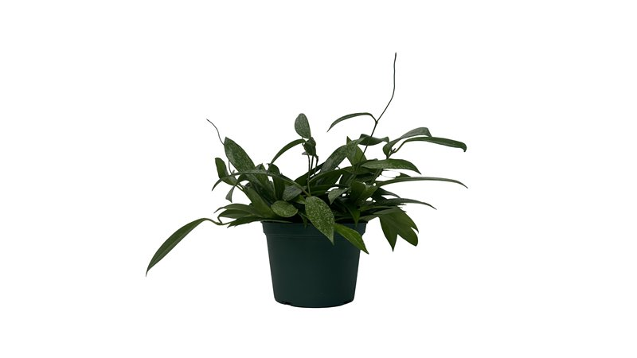
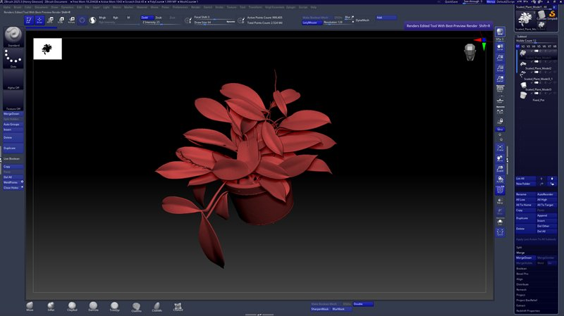
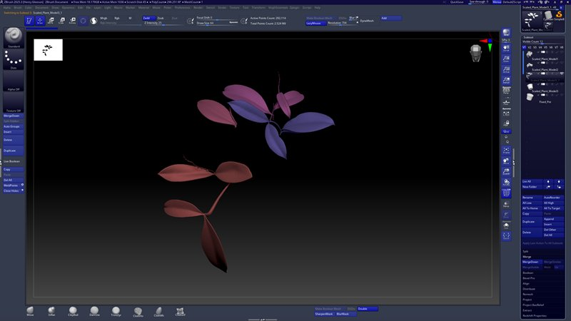
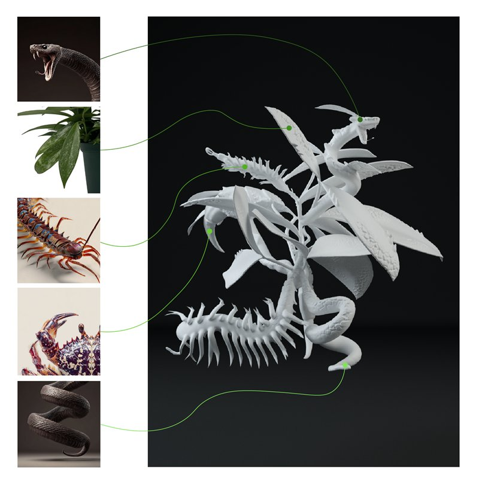
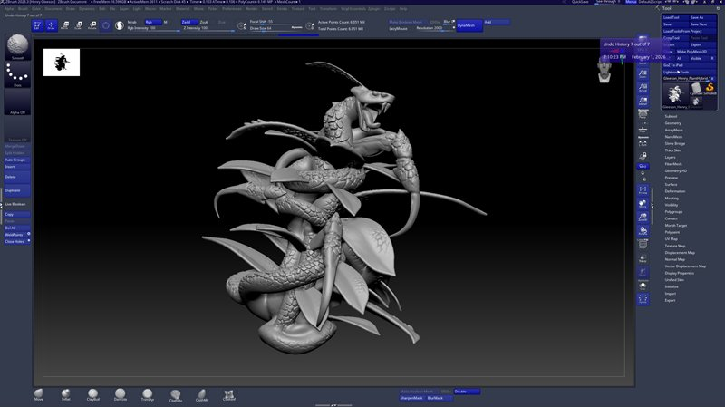
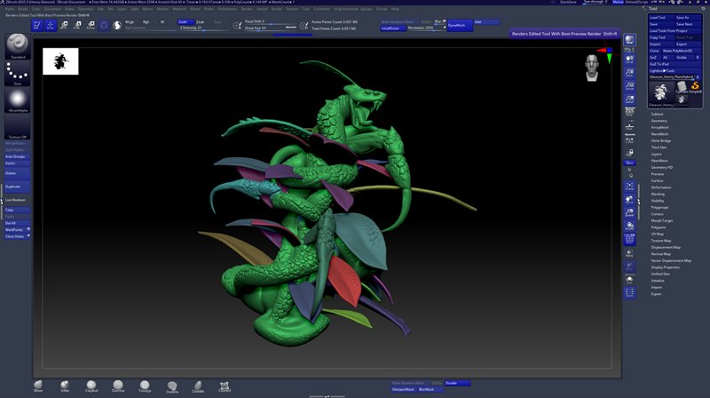
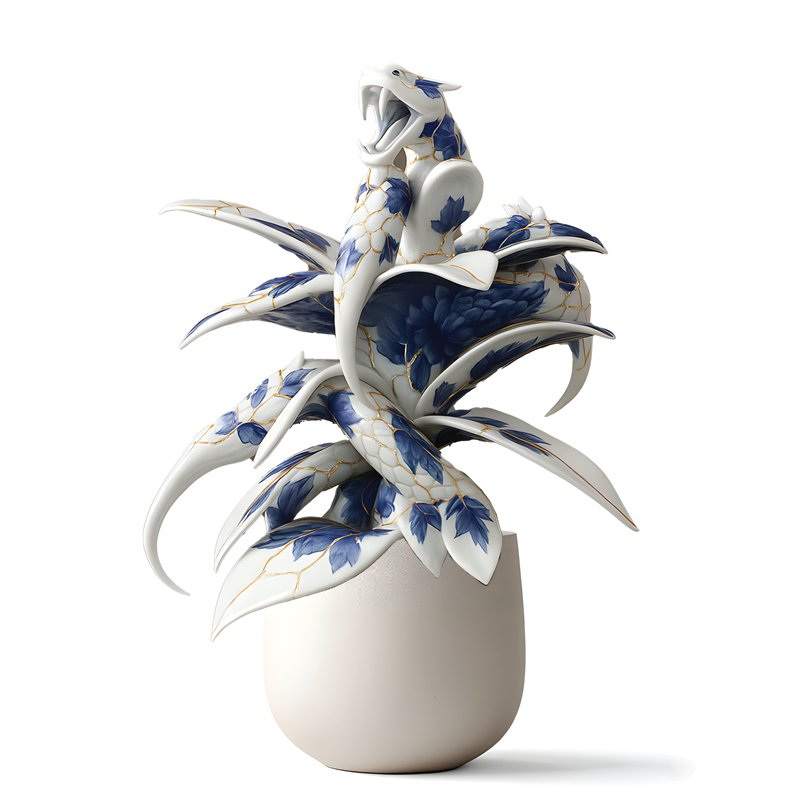

Sculpture — Scan & 3D print
Dirt Politics
A houseplant, a 3D scan, and a strange new creature. Keeping the plant alive was part of the grade.







Sculpture — Scan & 3D print
A houseplant, a 3D scan, and a strange new creature. Keeping the plant alive was part of the grade.






